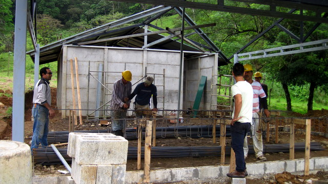
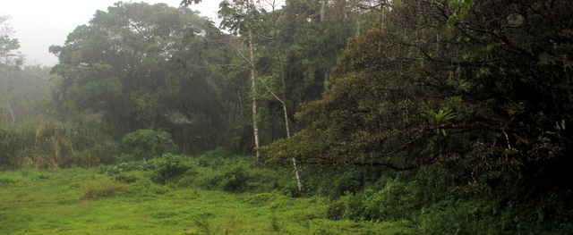
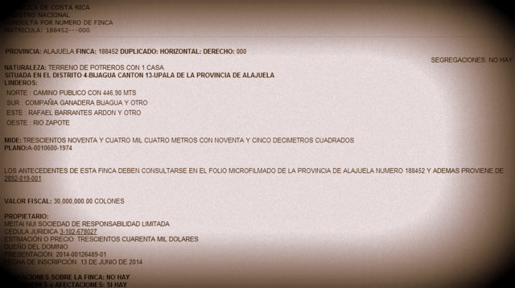
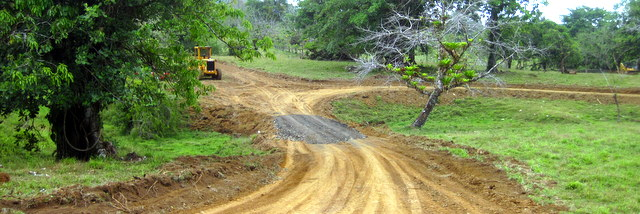
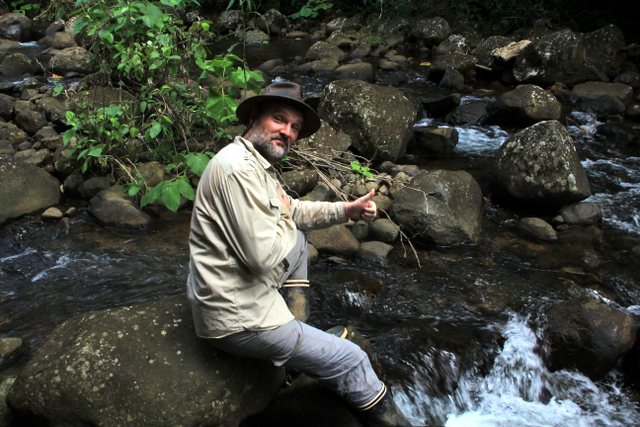
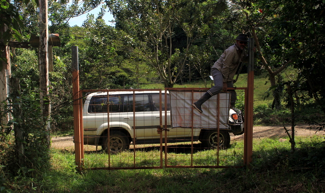
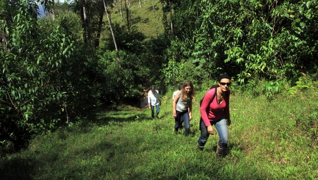
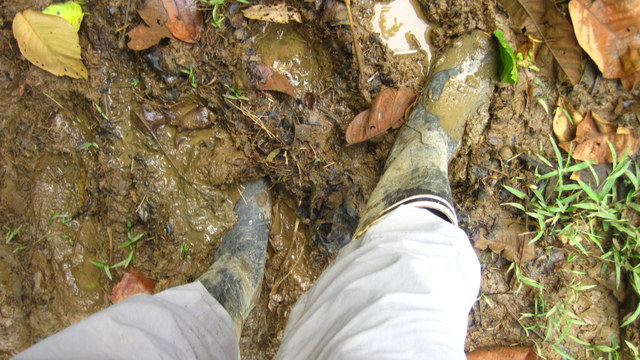
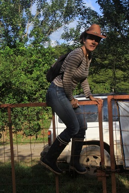
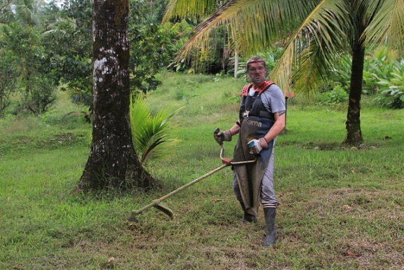

|
Pour ceux qui se demandent ce qu'on fait... |
Planter des tas d'arbres
Notre maison et les maisonnettes des invités sont majoritairement faites de béton et briques. Cependant, nous n'avons pas résisté au plaisir d'utiliser quelques unes des essences de bois locales pour les terrasses, les sols ou les meubles. En outre, pour faire bonne mesure, nous avons sélectionné des arbres rares comme le Tempisque, le Ron Ron ou le Tamarindo (pas pour leur rareté mais il se fait que, outre leur beauté intrinsèque, seules ces essences offrent les propriétés mécaniques ou hydrorésistantes necessaires à la construction)

Notre évier en Guapinol
Certains redresseurs de tort vont me faire la morale en me disant que je contribue à la déforestation du pays et au réchauffement de la planète en adoptant de surcroît une attitude colonialiste. C'est vrai, je reconnais que je me promènerais volontiers en chaise à porteurs dans ma finca en coupant les mains des indigènes fainéants. Mais ça s'est déjà fait et on n'est plus au moyen-âge que diable! Non, nous avons souhaité une approche plus moderne. Plutôt qu'interdire la coupe et attendre que le bois ne meure sur pied, le Costa Rica a préféré développer une gestion 'dynamique' de ses forêts: la coupe est trrrrès encadrée et les permis difficiles à obtenir, ce qui évite (ou du moins limite) la déforestation sauvage. Dans le même temps, l'état incite à la reforestation en subsidiant divers projets. Ainsi, les propriétaires terriens peuvent faire enregistrer leur forêt comme réserve privée (et, dans ce cas, ne pas y toucher) et recevoir une indemnité en compensation. Nous l'envisageons d'ailleurs très sérieusement.
Nous avons decidé de participer au renouvellement, nous avons planté 200 arbres dans la prairie, qui, du coup, sera bientôt à nouveau une forêt. Enfin, quand je dis 'bientôt', il faut considérer ce terme à l'aune des cycles forestiers. Un jour, mes arrière-petits enfants pourront grimper dans certains de ces arbres, comme les Cortesa Amarillo, qui croissent très lentement. Grâce à l'aide d'une coopérative locale dont le but est justement la reforestation des fincas, nous avons pu mettre la main sur des espèces parfois rares mais toujours endémiques. Au moins, on aura contribué au cycle de la nature, tout en profitant pleinement de l'incomparable atmosphère que dégagent les pièces de bois, qu'elles soient structurelles comme les poutres de l'entresol en Cenizaro, ou le pilier central en Ron Ron, ou fonctionnelles, comme la table à manger et l'escalier en Guapinol.
Et ça coûte combien de construire?
En gros, nous avons opté pour une maison 'clef en main', c'est-à-dire qu'on s'est adressé à un entrepreneur unique qui s'occupe de tout et assure la coordination des corps de métier. Au moins, je sais à qui je dois m'adresser quand j'observe un problème sur le chantier (où je suis 27h sur 24). On a un devis à 500$ le m² construit, hors mobilier et hors architecte. Pour ce prix, on a une maison en parpaing, metal stud, crépi, toit en zinc, peinture façade et matériel sanitaire.

Pas mal de monde sur le chantier aujourd'hui (ce que vous voyez n'est pas la maison mais le garage)
Les matériaux de base (béton, parpaings, ferraille, etc.) coûtent sensiblement le même prix qu'en Europe. La différence se fait essentiellement au niveau de la main d'oeuvre et des coûts 'annexes'.
Le salaire d'un ouvrier varie de $600 par mois pour un jeune homme plein de muscles à $1200/mois pour un chef de chantier (en passant par le soudeur, l'électricien, le plombier etc). Les charges patronales sont d'environ 35% et il faut compter un surcoût de 5% en 'assurance accidents du travail', obligatoire pour un chantier et incluse dans le devis.
Pas de coordinateur de sécurité et pas de 'j'en-profite-pour-me-faire-du-blé-grâce-à-la-réglementation-complexe-et-pléthorique', genre certifieur d'isolation thermique. Et, justement, comme il fait 24°C toute l'année, pas besoin d'isolation thermique (pas de triple vitrage non plus), pas besoin de chauffage (et toute la tuyauterie qui va avec), pas besoin d'air conditionné non plus.
Obtenir le permis de construire
Et voilà, près de 7 mois jour pour jour, après notre arrivée, nous avons obtenu le permis de bâtir.

LE permis de bâtir (MEITAI NUI, c'est nous!)
Roy, l'ingénieur qui a signé les plans, nous a bien aidé à surmonter cet obstacle. Pour finir, nous commencerons la construction de la maison en toute légalité!
Ce matin, en arrivant sur le chantier, ce ne sont pas moins de 7 ouvriers que nous avons croisés, tous plein d'entrain, à préparer les armatures métalliques qui viendront renforcer le béton des fondations.
Autre bonne nouvelle, la compagnie d'électricité a accepté de placer un nouveau transformateur à l'entrée de la finca, ce qui nous permettra de consommer plein d'électricité sans faire tout sauter.
Construire une bodega
En attendant que le permis de construire nous soit gracieusement accordé, nous fourbissons nos armes.

Début du chantier
Effectivement, c'est bien beau d'obtenir un permis de construire, encore faut-il amener les matériaux de construction sur le chantier, et y disposer d'eau et d'électricité.
Pour l'acheminement, nous avons construit une route. Pour l'eau, nous avons réalisé un captage. Pour l'électricité, nous nous sommes connectés au réseau via 250m de cable bien épais.
Finalement, nous avons entamé la construction d'une bodega et d'un garage mitoyen, le tout sur 14x7m, afin d'entreposer les outils au sec et à l'abri des 'emprunts' durant le chantier. C'est tout ce que l'on peut raisonnablement entreprendre sans permis...
Peaufiner les plans
Il peut sembler étrange de peaufiner les plans alors que je parlais récemment d'introduire le permis de bâtir. Mais c'est justement l'imminence de la demande qui nous pousse à finaliser. En outre, les détails que nous évoquons sont sans effet sur l'aspect extérieur de la construction. On ne remet pas tout en question...

Il pleut sans discontinuer depuis une semaine
Comme il pleut toute la journée depuis une semaine, nous sommes tous confinés à l'intérieur, ce qui constitue une excellente occasion d'organiser de nombreuses réunions avec l'entrepreneur. Il s'agit de déterminer le nombre de marches de l'escalier, l'emplacement du réservoir d'eau chaude, l'opportunité d'une trappe de visite au grenier, la taille des portes des toilettes, la forme du sas de la chambre froide ou encore l'angle de la 'plage' pour la piscine.
Ben oui, faut penser à tout. Sans compter les visites journalières à la finca (sous la pluie, si, si) pour déterminer le meilleur endroit pour placer la citerne d'eau douce ainsi que la pompe qui alimentera notre village de vacance. En effet, la disponibilité de l'eau 'de ville' est fort variable et sa pression assez erratique. Pour ne prendre aucun risque, nous allons nous constituer un petit réservoir tampon nanti d'une pompe adéquate et alimenté soit par la ville, soit via un captage sur la propriété (lequel reste à réaliser, bien évidemment).
Tout se passe dans la bonne humeur. L'entrepreneur, que nous ont conseillé Daniel et Dominique, les 'autres' Belges de Bijagua, est un jeune homme du coin (un gamin de 35 ans). Il est intelligent, ponctuel et efficace. Il dispose d'une équipe dynamique, d'après ce qu'on a pu voir sur ses chantiers actuels. En plus, il fait ses plans sur PC... c'est dire! A bien y penser, il n'a qu'un seul défaut: il ne parle qu'Espagnol. Enfin, j'écris cela maintenant mais je ne manquerai pas d'avoir des envies de meurtre dans les mois qui viennent... C'est un entrepreneur quand même...
Introduire le permis de bâtir
Notre petit séjour en Europe m'a permis de constater qu'un petit malentendu pouvait sourdre de ma prose. Je le dissipe d'emblée: au Costa Rica aussi, il faut un permis de construire avant d'ériger une construction, aussi insignifiante soit-elle. On n'est pas au far west que diable!

Extrait du titre de propriété (MEITAI NUI, c'est nous!)
De fait, les travaux que nous avions engagés jusqu'à présent pouvaient laisser supposer qu'on vivait dans un état de non droit urbanistique, un peu comme sur la côte d'Azur, mais non. Simplement, nous avions interprété les textes selon une acception innovante. Cette approche a toutefois des limites et lorsque nous avons demandé un raccord au réseau électrique afin de poursuivre les travaux, on nous a gentiment fait observer qu'il nous fallait des documents officiels, comme par exemple un extrait de titre de propriété, ce que nous n'avions guère, n'ayant même pas encore signé l'acte d'achat authentique...
C'est maintenant chose faite (il aura quand même fallu 10 semaines pour obtenir l'enregistrement officiel de la transaction immobilière au registre national). Avec ce document, non seulement on peut demander un raccordement au réseau électrique mais l'on peut aussi obtenir un autre sésame: le certificat de disponibilité d'eau potable sur la finca, document indispensable à l'introduction du permis de bâtir. Il ne nous reste qu'à recevoir les plans détaillés de l'ingénieur et l'on pourra enfin se présenter au conseil des sages de Bijagua afin d'expliquer notre grandiose projet - j'exagère un peu, on va simplement remettre un dossier.
Couvrir les chemins
C'est bien beau d'avoir une maison aux confins de l'espace-temps connu, encore faut-il pouvoir s'y rendre, y disposer d'eau potable et l'éclairer le soir venu.

La première couche de 'lastre' est posée
Pour cela, il convient de construire des chemins qui résisteront aux 3m de pluie qui tombent chaque année, à partir du mois de mai, raison pour laquelle on se hâte de finir le travail car, une fois la saison des pluies entamée, la construction d'un chemin ressemblera plus à une partie de water polo qu'à une entreprise de génie civil.
Freddy a donc tracé plus de 400m de routes dans la propriété avec son beau buldozer flambant démodé. Ensuite, ce ne sont pas moins de 50 camions qui sont venus déposer leur cargaison de gravier aspiré dans les rivières alentour. Grâce à cela, le lieu de notre future maison est enfin accessible aux engins motorisés, ce qui nous permet d'en envisager la construction avec sérénité. Sur notre lancée, nous avons même creusé 500m de tranchées afin d'y poser la tuyauterie et le cablage nécessaires à la viabilisation de notre demeure et des trois maisons d'accueil que nous comptons construire dans les prochains mois.
Tracer l'empreinte de la future maison
Après avoir trouvé l'emplacement idéal pour la maison, il convient d'en valider la pertinence. A cet effet, rien de tel que de tracer le périmètre grâce à quelques pieux et de la corde. C'est ce que nous avons fait, afin de mieux nous rendre compte du projet.

Cécile traverse un rio presque à sec, avec son petit calepin et son long bâton
On a également trouvé le meilleur endroit pour faire un petit barrage sur l'un des ruisseaux de la propriété, afin de créer une lagune dans la prairie valonnée. En cette saison sèche, le niveau d'eau est très faible, ce qui rend le travail relativement facile. Mais c'est aussi cela qui dicte l'urgence de notre démarche: dès que la saison des pluies commencera, en mai, il sera impossible de construire la route, et encore moins le barrage...
Pour la maison, c'est différent: il faut que nous en déterminions l'emplacement dès maintenant (pour savoir où mène le chemin) mais la construction peut commencer plus tard, vers le mois de juillet, après obtention des permis. Cela ne nous a pas empêché de trouver un ingénieur civil local pour en signer les plans ainsi qu'un entrepreneur pour la construire et de les emmener in situ afin qu'ils nous fassent part de leurs impressions. Jusqu'à présent, nous avons des feux verts de toutes parts. C'est normal, je suis ingénieur civil moi aussi, que diable...au grade scientifique certes, mais ingénieur quand même. Tous comptes faits, je n'ai peut-être pas que perdu mon temps à l'université.

Eric plante le premier piquet: c'est le début de la construction!!!
Arpenter la finca de nos rêves
C'est fait, le vendeur a accepté l'offre que nous faisions pour nous porter acquéreurs de sa finca. Il s'agit d'une magnifique propriété de 40 hectares, située 2.5 km à l'ouest de Bijagua (coordonnées espace-temps Google Earth du 'milieu' : 10.745870° N -85.076600° W). On y trouve environ 8 hectares de prairie plate pour le bétail, 6 hectares de prairie en pente pour y mettre du cacao et le reste de forêt pratiquement vierge.
La finca est valonnée: on y entre par 510m d'altitude et la montagne y culmine à 640m. Dans la forêt circule une rivière paradisiaque et à l'ouest, le Rio Zapote la borde sur près d'un kilomètre. Ce même Rio Zapote fait l'objet d'un projet hydroélectrique un peu plus en aval (ce qui nous permet de jouir d'une route bien revêtue jusqu'à 300m de l'entrée) avant d'aller se jeter dans le lac Nicaragua, 40 km au nord.
Depuis l'acquisition de la propriété, nous ne cessons de l'arpenter, littéralement, afin de trouver le meilleur tracé pour le chemin qui mènera à notre future maison. Les paramètres à prendre en considération sont nombreux: même si l'argent compte beaucoup - qui l'eût cru? - il faut aussi penser à l'alimentation en eau (pas trop haut si l'on veut de la pression), l'apport d'électricité (pas trop loin de la route sinon le coût de transport devient rédhibitoire), les ruisseaux qui traversent la propriété et, plus généralement, la nature du sol, la vue que l'on souhaite grandiose - évidemment -, la proximité d'arbres gigantesques (mais qui peuvent tomber...), l'orientation pour éviter d'avoir la terrasse plein sud et l'emplacement des futures chambres d'hôtes.
Même si Cécile et moi passons des journées entières à enjamber les barrières à bétail, les enfants nous rejoignent parfois pour se rendre utiles. Grâce au GPS, on peut prendre des mesures relativement précises, suffisantes en tous cas pour se faire une idée de la longueur et de la déclivité du chemin à construire.

Sidney au GPS, Kenya et Syr Daria au carnet, Eric au niveau et Cécile à la photo: un travail d'équipe
Trouver des fincas à vendre
C'est l'une des particularités du Costa Rica: toutes les fincas sont à vendre... Enfin, pour être plus précis, tous les Ticos qui en ont une sont prêts à vendre leur finca (et celle de leur voisin) au premier gringo venu, pour peu qu'il ait des dollars (prononcez 'Dollares'). Les prix demandés sont assez souvent surestimés (mais raisonnables par rapport à chez nous), les Ticos étant simplement à l'affût des étrangers un peu crédules. L'envolée des prix des terrains en 2000/2005 semble encore dans toutes les mémoires, même si, depuis la crise de 2008, le marché s'est calmé, ce que semblent ignorer quelques autochtones. Mais bon, je les comprends, si je trouve un Français suffisament naïf pour acheter mon terrain au double de sa valeur, je n'hésite pas non plus.
Le marché apparent est globalement surévalué par rapport au marché réel mais son opacité rend difficile une approche objective. En d'autres termes, il y a beaucoup de fincas à vendre mais peu de fincas vendues (et le prix reste mystérieux).
La problématique consiste à trouver une finca que son propriétaire souhaite réellement vendre et, à partir de là, entamer les validations d'usage avant de faire offre. On notera à ce sujet des spécificités locales intéressantes, du genre: si vous autorisez votre voisin à emprunter un bout de votre finca avec son bétail, ce petit bout de votre finca devient servitude au bout d'un an... Donc, le prochain propriétaire devra également laisser passer le bétail, même s'il ne veut pas ou ne le sait pas. Ce n'est pas toujours marqué sur les plans qui, en outre, n'ont pas de réelle valeur légale puisqu'ils sont établis aux ordres du demandeur, lequel peut avoir des idées bien à lui en terme de cadastre.

Pas de problème d'eau dans cette finca!
Obtenir des devis
C'est bien beau de vouloir une finca de 20 Ha dans l'arrière pays, mais cela pose quelques problèmes de logistique. En effet, en premier lieu, pour pouvoir construire, il faut de l'eau 'légale' sur la finca, c'est-à-dire de l'eau approuvée par les autorités, même si elle provient d'une source sur la propriété. Le plus simple reste évidemment d'être connecté au réseau de distribution, ce qui n'est pas toujours possible.
Deuxième problème: l'électricité. Trouver un terrain génial au milieu de nulle part signifie qu'il n'y a pas d'électricité. A moins de vouloir vivre à la dure, comme sur un bateau par exemple, ce n'est pas conseillé. Les plans photovoltaïques et éoliennes: non merci. On connaît, on a déjà donné.
Si l'on veut construire la maison au calme, en retrait de la route, il faut prévoir non seulement l'alimentation électrique mais aussi la construction d'un chemin carrossable, parfois sur plusieurs centaines de mètres. Comme il tombe 3m d'eau par an, la construction du chemin ne peut être prise à la légère et nécessite souvent la réalisation d'ouvrages annexes, comme des ponts, par exemple.
A moins d'être ingénieur civil, comme moi, il est illusoire de maîtriser l'art du transport électrique et de l'asphaltage, sans compter le pontage, ce qui conduit inéluctablement à la demande d'élaboration de devis. Tout cela dans la langue de Cervantes, bien évidemment. Cela fait que je deviens extrêmement bilingue en pont, poteau, source ou béton...
Visiter des fincas, par effraction s'il le faut
La finca de nos rêves occupe au moins 10 hectares et est impérativement située près d'une 'grande' ville, pour permettre aux enfants de fréquenter un établissement scolaire réputé, comme le lycée Emilio Jacmano de Upala...

On devient de vrais pros
Marcher en file indienne dans l'arrière pays
Avant de nous poser, nous souhaitons apprendre à connaître la région. Les gens bien informés nous conseillent de rester un an sur place avant de nous décider. Les gens encore mieux informés savent que cela relève de l'utopie et que nous devons nous établir en comptant un peu sur la chance...

La tribu en visite
Patauger dans la boue omniprésente
A l'exception de la côte Pacifique prévue pour rotir les touristes, le Costa Rica est assez pluvieux (de 2 à 5m de pluie par an). Il n'est pas rare de s'enfoncer jusqu'aux chevilles dans la terre gluante. D'où l'intérêt de disposer de chemins... et de bottes.

Selfie vertical
Faire du cheval sur les clôtures
Pour le moment, on s'en contente. Mais l'Alajuela (prononcez a-Laruel-a), notre province d'adoption, est relativement pauvre en voies asphaltées et riche en montagnes. Le paradis pour les randonnées équestres (que, personnellement, j'abhorre)

Cécile à l'oeuvre
Terroriser la pelouse
Damned, ça pousse vite. Heureusement qu'ils ont des débroussailleuses de compet. Ca risque d'être utile quand on défrichera notre petit coin de paradis dans la jungle...

Je suis une plaie pour les pelouses folles